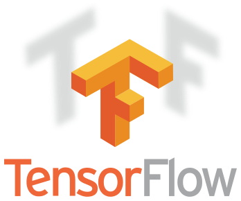
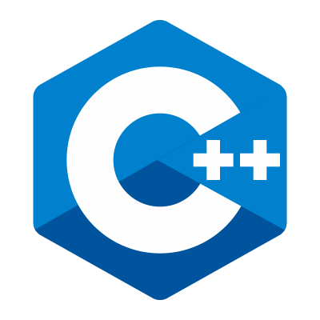

Высокоуровневый язык Python 3
Фреймворк для глубокого обучения TensorFlow


Мощный высокоуровневый язык C++
Я владею навыками проектирования и разработки программ на языках Pyhon, C/C+ и Go. Также увлекаюсь олимпиадным программированием, Back-end разработкой и машинным обучением. Помимо разработки я являюсь активным участником сети Stack Exchange, в частности StackOverflow.